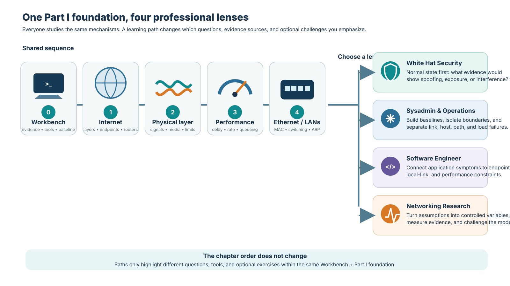

Learning Paths

White Hat Security
What can an observer, attacker, or defender learn or manipulate at this boundary?
Understand normal traffic deeply enough to investigate abnormal and adversarial behavior.
Security investigation begins with trustworthy observation: know what the host, socket, route, and packet tools can actually prove.
CoreChapter 1 · Internet ArchitectureA defender must know the normal end-to-end path before deciding whether a DNS, routing, transport, or application observation is suspicious.
ExploreChapter 2 · Physical Layer: Signals and MediaPhysical media define exposure to interception, interference, jamming, and hardware-level trust assumptions.
ImportantChapter 3 · Network PerformanceTiming and performance evidence can reveal anomalies, but noisy measurements can also create false security conclusions.
CoreChapter 4 · Ethernet and Local NetworksARP, MAC learning, broadcast domains, and switching are essential for understanding local-network spoofing and traffic visibility.
Sysadmin & Operations
What state exists, who owns it, how do I inspect it, and how do I restore service safely?
Operate real hosts and services by locating state, isolating failures, and restoring service safely.
The workbench establishes the operator's basic vocabulary: interfaces, addresses, routes, neighbors, sockets, processes, and reproducible evidence.
CoreChapter 1 · Internet ArchitectureOperations work becomes much easier when every symptom can be placed on the end-to-end dependency chain.
ImportantChapter 2 · Physical Layer: Signals and MediaLink state, carrier, media limits, and physical errors are the first boundary beneath operating-system network state.
CoreChapter 3 · Network PerformanceOperators need to distinguish latency, throughput, queueing, and bottlenecks before deciding that a service is simply 'slow'.
CoreChapter 4 · Ethernet and Local NetworksNeighbor discovery, switching, broadcast scope, and interface state explain many same-LAN failures.
Software Engineer
What guarantees does the network give my program, and which guarantees must my program create itself?
Build networked software that respects transport semantics, failure modes, performance, and distributed-system boundaries.
Developers benefit from seeing the operating-system state beneath their APIs before debugging network code by guesswork.
CoreChapter 1 · Internet ArchitectureThe end-to-end architecture shows how one application action depends on naming, routing, transport, and remote service state.
ExploreChapter 2 · Physical Layer: Signals and MediaPhysical limits matter mainly through latency, loss, and rate constraints exposed upward to software.
CoreChapter 3 · Network PerformanceLatency decomposition, BDP, queueing, and throughput are essential for designing and benchmarking responsive networked applications.
ImportantChapter 4 · Ethernet and Local NetworksDevelopers rarely program Ethernet directly, but local-link state explains deployment failures that otherwise look like application bugs.
Networking Research
How do we know this claim is true, and how could the network be designed differently?
Turn mechanisms into questions, hypotheses, controlled experiments, measurements, and defensible claims.
Reproducibility starts with a controlled environment, explicit evidence sources, versioned artifacts, and repeatable commands.
CoreChapter 1 · Internet ArchitectureInternet architecture provides the abstractions and design boundaries from which research questions about layering, state, and evolvability emerge.
CoreChapter 2 · Physical Layer: Signals and MediaPhysical limits provide clean examples of model assumptions, capacity bounds, signal uncertainty, and the gap between ideal theory and measured channels.
CoreChapter 3 · Network PerformancePerformance research depends on decomposing metrics, controlling confounders, repeating measurements, and separating latency sources.
CoreChapter 4 · Ethernet and Local NetworksLearning switches and neighbor discovery are compact distributed mechanisms suitable for studying state learning, flooding, convergence, and scaling trade-offs.